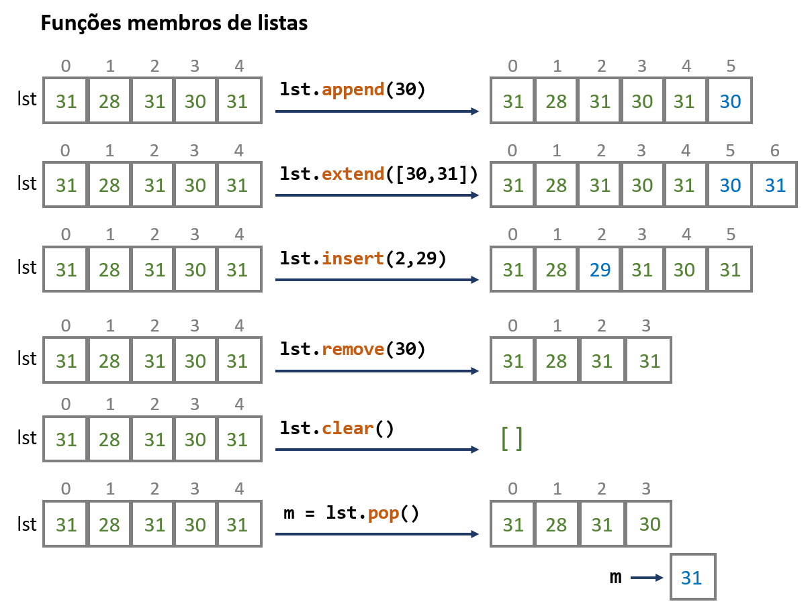
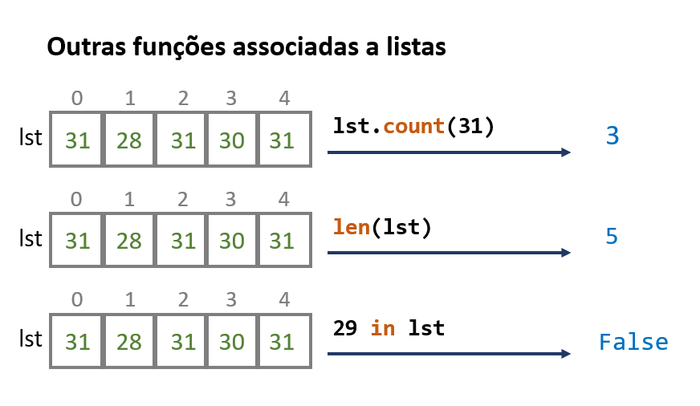

3. Listas e dicionários#
3.1. Revisão sobre coleções#
No capítulo anterior, definiu-se o conceito de coleção e mostrou-se 4 dos tipos fundamentais de coleções na linguagem Python: as listas, as strings, os dicionários e os conjuntos.
A função len(), para calcular o número de elementos de uma coleção, e o
operador in, para verificar se um elemento está contido numa coleção, podem
ser usados em qualquer coleção.
Nota
Recorde que o operador in, ao ser usado com dicionários, verifica
se um elemento está entre as chaves do dicionário.
Recorde que o operador in, ao sr usado com strings, pode verificar se uma substrings
está presente e não apenas uma letra:
if 'AUG' in 'UCCAUGGCCAA':
print('AUG existe na sequência')
Outra característica em comum a todas as coleções é a possibilidade de serem “iteradas”
usando o comando for.
Nota
Recorde que, usando o comando for:
Passamos por todos os elementos de uma lista (pela sua ordem)
Passamos pelas chaves de um dicionário.
Passamos pelos caracteres de uma string (pela sua ordem)
Passamos pelos elementos de um conjunto.
Vale a pena relembrar que as listas e os dicionários podem ser criados “em compreensão”:
quads = [n**2 for n in range(1, 11)]
n_letras = {p: len(p) for p in ['isto', 'são', 'várias', 'palavras']}
print(quads)
print(n_letras)
[1, 4, 9, 16, 25, 36, 49, 64, 81, 100]
{'isto': 4, 'são': 3, 'várias': 6, 'palavras': 8}
3.2. Listas#
Neste capítulo mostra-se algumas funções que são específicas de cada coleção, começando pelas listas e dicionários. As funções características das strings serão o tema do próximo capítulo.
Vejamos algumas funções que são específicas das listas.
A referência oficial destas funções pode ser consultada na documentação da linguagem Python.
De uma forma esquemática, algumas das funções membro de listas mais usadas são as seguintes

Note-se que a função .remove() apenas remove a primeira ocorrência de um elemento numa lista e não todas as ocorrências.
Por outro lado, estas outras funções, já vistas anteriormente, são também muito usadas com listas:

Um primeiro exemplo, ilustrando o uso das funções .count() e .remove():
# Remover todas as ocorrências de um elemento
a = [1, 2, 3, 4, 1, 2, 3, 4, 1, 2, 3, 4]
print(a)
for i in range(a.count(1)):
a.remove(1)
print('\ndepois de remover todos os 1:')
print(a)
[1, 2, 3, 4, 1, 2, 3, 4, 1, 2, 3, 4]
depois de remover todos os 1:
[2, 3, 4, 2, 3, 4, 2, 3, 4]
Um segundo exemplo, ilustrando o uso da função .count() (e list()):
# Contar K e L na sequência de uma proteína
seq = 'ADKHLILTAVGGCWFHVAFWEVEKAGAHKWE'
seqlista = list(seq)
nK = seqlista.count('K')
nL = seqlista.count('L')
print(f'Existem {nK} lisinas e {nL} leucinas na sequência')
print(seq)
Existem 3 lisinas e 2 leucinas na sequência
ADKHLILTAVGGCWFHVAFWEVEKAGAHKWE
No entanto, uma vez que a função .count() também funciona com strings, o programa anterior pode ser escrito exclusivamente com base em strings:
# Contar K e L na sequência de uma proteína
seq = 'ADKHLILTAVGGCWFHVAFWEVEKAGAHKWE'
nK = seq.count('K')
nL = seq.count('L')
print(f'Existem {nK} lisinas e {nL} leucinas na sequência')
print(seq)
Existem 3 lisinas e 2 leucinas na sequência
ADKHLILTAVGGCWFHVAFWEVEKAGAHKWE
3.3. .append(), como função geradora de listas#
A função .append() é uma das mais usadas, já que permite a construção de listas novas num programa, muits vezes com base em iteração com for, começando a partir de uma lista vazia.
Alguns exemplos:
# Gerar uma lista com os 40 primeiros quadrados perfeitos
a = []
for i in range(1, 41):
a.append(i**2)
print(a)
[1, 4, 9, 16, 25, 36, 49, 64, 81, 100, 121, 144, 169, 196, 225, 256, 289, 324, 361, 400, 441, 484, 529, 576, 625, 676, 729, 784, 841, 900, 961, 1024, 1089, 1156, 1225, 1296, 1369, 1444, 1521, 1600]
# Gerar uma lista com os 40 primeiros quadrados perfeitos
# que estejam entre 400 e 800
a = []
for i in range(1, 41):
q = i**2
if q >= 400 and q <= 800:
a.append(q)
print(a)
[400, 441, 484, 529, 576, 625, 676, 729, 784]
# Somar os 10 primeiros números ímpares
ímpares = []
for i in range(10):
ímpares.append(2*i + 1)
print(ímpares)
resultado = sum(ímpares)
print('A soma dos 10 primeiros ímpares é', resultado)
print('Verificação:')
print('Pela soma de prog. aritm.',(1+19)/2*10)
[1, 3, 5, 7, 9, 11, 13, 15, 17, 19]
A soma dos 10 primeiros ímpares é 100
Verificação:
Pela soma de prog. aritm. 100.0
3.3.1. Formas equivalentes de usar .append() e listas em compreensão#
A utilização da função .append() para criar uma lista nova é muitas vezes equivalente a usar uma lista em compreensão.
Ilustrando com os dois últimos exemplos:
a = []
for i in range(1, 41):
q = i**2
if q >= 400 and q <= 800:
a.append(q)
print(a)
a = [i**2 for i in range(1, 41) if 400 <= i**2 <= 800]
print(a)
[400, 441, 484, 529, 576, 625, 676, 729, 784]
[400, 441, 484, 529, 576, 625, 676, 729, 784]
Repare-se que os dois print() dão o mesmo resultado.
ímpares = []
for i in range(10):
ímpares.append(2*i + 1)
resultado = sum(ímpares)
# é equivalente a
resultado = sum([2*i + 1 for i in range(10)])
print('A soma dos 10 primeiros ímpares é', resultado)
print('Verificação, pela soma de prog. aritm.',(1+19)/2*10)
A soma dos 10 primeiros ímpares é 100
Verificação, pela soma de prog. aritm. 100.0
3.4. Indexação com números negativos#
As listas e as string têm uma numeração implícita, (a contar do zero), e podemos
indexar uma lista usando lista[posição]. Obtemos o elemento que está
numa posição.
Mostrando, com um comentário as posições implícitas dos elementos:
enzimas = ['HK', 'G6PDH', 'TPI', 'Ald', 'PFK', 'PK']
# 0 1 2 3 4 5 len()
print(enzimas[0])
print(enzimas[3])
# para obter o último elemento...
print(enzimas[len(enzimas) -1])
HK
Ald
PK
As listas e as strings têm também uma numeração implícita com números negativos: o último elemento é -1, o penúltimo -2 e assim sucessivamente.
enzimas = ['HK', 'G6PDH', 'TPI', 'Ald', 'PFK', 'PK']
# -4 -3 -2 -1
print(enzimas[-4])
print(enzimas[-6])
print(enzimas[-1])
TPI
HK
PK
Dica
para obter o último elemento de uma lista podemos simplesmente indexar com -1
último = a[-1]
A indexação permite também modificar um elemento que está numa
posição, usando = como se fossemos atribuír um nome.
No seguinte exemplo modificamos o elemento que está na posição 2:
a = [1, 1, 1, 2, 2, 2, 3, 3, 3, 4, 4, 4]
print(a)
a[2] = 4 * 2**10 + a[-1]
print(a)
[1, 1, 1, 2, 2, 2, 3, 3, 3, 4, 4, 4]
[1, 1, 4100, 2, 2, 2, 3, 3, 3, 4, 4, 4]
Podemos aplicar um comando for não diretamente aos elementos de uma lista
mas sim aos números inteiros , geralmente gerados com range(), que podem funcionar como posições para indexar a lista.
Vejamos estas duas alternativas:
# Iteração direta dos elementos da lista
a = [1, 2, 3, 2, 1]
for e in a:
print(e)
1
2
3
2
1
Esta é a maneira simples e direta de aplicar comandos (neste caso print()) a todos os
elementos da lista.
Mas o mesmo pode ser conseguido, de uma forma indireta, passando pelas posições, não pelos próprios elementos, e usando indexação para obter os elementos:
# iteração através das posições dos elementos
a = [1, 2, 3, 2, 1]
for i in range(len(a)):
print(a[i])
1
2
3
2
1
Claro que a forma indireta é mais complicada e são raras as ocasiões onde teremos de a usar.
No entanto, um exemplo:
Problema
Calcular as diferenças sucessivas entre os elementos de uma lista, pondo o resultado numa lista
a = [1, 1, 1, 2, 2, 2, 3, 3, 3, 5, 5, 7]
difs = []
for i in range(1, len(a)):
d = a[i] - a[i-1]
difs.append(d)
print('Lista')
print(a)
print('\nDiferenças sucessivas')
print(difs)
Lista
[1, 1, 1, 2, 2, 2, 3, 3, 3, 5, 5, 7]
Diferenças sucessivas
[0, 0, 1, 0, 0, 1, 0, 0, 2, 0, 2]
Neste exemplo tivemos de usar posições, os índices dos elementos, porque as diferenças sucessivas têm de ser calculadas por \(d_i = a_i - a_{i-1}\) ou, em Python,
d = a[i] - a[i-1]
Repare-se que a range() tem de começar em 1, uma vez que, se começasse em 0, a primeira
diferença calculada seria d = a[0] - a[-1] que não faria sentido, uma vez que a[-1]
representa o último elemento da lista.
Exemplo
Mostrar que as diferenças sucessivas entre os quadrados perfeitos, são os números ímpares (usar os 20 primeiros)
#calcular os quadrados perfeitos
quads = []
for i in range(20):
quads.append(i**2)
#calcular as diferenças sucessivas
difs = []
for i in range(1, len(quads)):
d = quads[i] - quads[i-1]
difs.append(d)
print('quadrados perfeitos', quads)
print('\ndiferenças sucessivas', difs)
quadrados perfeitos [0, 1, 4, 9, 16, 25, 36, 49, 64, 81, 100, 121, 144, 169, 196, 225, 256, 289, 324, 361]
diferenças sucessivas [1, 3, 5, 7, 9, 11, 13, 15, 17, 19, 21, 23, 25, 27, 29, 31, 33, 35, 37]
A propriedade matemática anterior foi usada por Galileu no estudo da queda livre dos corpos.
As distâncias sucessivas percorridas durante a queda para a mesma unidade de tempo estão entre si como a sucessão dos números ímpares, o que implica que a distância acumulada cresce segundo o quadrado do tempo decorrido: o movimento de queda livre é uniformemente acelerado.
As listas em compreensão podem ser usadas para abreviar o programa, sem recorrer a listas vazias e .append():
quads = [n**2 for n in range(20)]
difs = [quads[i] - quads[i-1] for i in range(1, len(quads))]
print('Quadrados: ', quads)
print('\nDiferenças:', difs)
Quadrados: [0, 1, 4, 9, 16, 25, 36, 49, 64, 81, 100, 121, 144, 169, 196, 225, 256, 289, 324, 361]
Diferenças: [1, 3, 5, 7, 9, 11, 13, 15, 17, 19, 21, 23, 25, 27, 29, 31, 33, 35, 37]
Uma pequena nota final sobre a utilização de indexação para passar por todos os elementos de uma lista:
Nota
A maneira “indireta” de percorrer uma lista com for
for i in range(len(lista)):
"operações com lista[i]"
é muito típica de outras linguagens de programação. Não na linguagem Python, onde é encorajado o uso da forma direta:
for e in lista:
"operações com e"
Na linguagem Python é quase sempre possível reescrever a forma indireta na forma direta.
Quando os índices dos elementos são mesmo necessários a função enumerate(),
vista no capítulo anterior, pode muitas vezes substituír a indexação.
Num dos próximos capítulos abordaremos ainda o uso de módulos de computação científica, em
particular os módulos numpy e pandas, em que a iteração é substituída por operações “vetoriais”, que, efetivamente, prescindem o uso de comandos for, quer na sua forma direta quer na sua forma indireta.
3.5. Mais algumas funções de listas#
3.5.1. .reverse(), .sort()#
As funções .reverse(), .sort() também modificam uma lista, tal como, por exemplo, a função .append().
.reverse() coloca os elementos da lista por uma ordem contrária aquela que é dada.
.sort() ordena os elemento da lista por ordem alfabética ou por ordem numérica.
a = ['seg', 'ter', 'qua', 'qui', 'sex', 'sab', 'dom']
print('lista original')
print(a)
a.reverse()
print('\nDepois de a.reverse()')
print(a)
a.sort()
print('\nDepois de a.sort()')
print(a)
lista original
['seg', 'ter', 'qua', 'qui', 'sex', 'sab', 'dom']
Depois de a.reverse()
['dom', 'sab', 'sex', 'qui', 'qua', 'ter', 'seg']
Depois de a.sort()
['dom', 'qua', 'qui', 'sab', 'seg', 'sex', 'ter']
3.6. Dicionários#
Os dicionários são associações (não ordenadas) entre chaves e valores.
Nota
Num dicionário cada chave é única. Não pode haver chaves repetidas.
3.6.1. Acrescentar e modificar elementos (chave:valor)#
Importante
A maneira de obter, inserir e modificar elementos de um dicionário é através das suas chaves, usando indexação
De certa forma é mais fácil inserir e modificar elementos (pares chave: valor) num dicionário do que numa lista. Basta usar indexação pela chave. O melhor será com um exemplo.
d = {'H':1, 'Li':3, 'Na':11, 'K':19}
print(d)
# inserir um elemento novo (par chave:valor)
d['O'] = 16
print(d)
# modificar um elemento já existente
d['O'] = 18
print(d)
{'H': 1, 'Li': 3, 'Na': 11, 'K': 19}
{'H': 1, 'Li': 3, 'Na': 11, 'K': 19, 'O': 16}
{'H': 1, 'Li': 3, 'Na': 11, 'K': 19, 'O': 18}
Não esquecer que o operador in procura se existe ou não uma chave
d = {'H':1, 'Li':3, 'Na':11, 'K':19}
if 'N' in d:
print('Existe info sobre o azoto')
else:
print('Não existe info sobre o azoto')
Não existe info sobre o azoto
Não esquecer que o comando for aplicado a dicionários passa pelas chaves.
Um exemplo, com uma mini tabela periódica:
# elementos cujo símbolo tem 2 letras
tperiodica = {'H':1, 'Li':3, 'Na':11, 'K':19, 'O':18}
for k in tperiodica:
if len(k) == 2:
print(k)
Li
Na
Mas, percorrendo as chaves, podemos obter os valores correspondentes por indexação:
# elementos com o número atómico superior a 10
tperiodica = {'H':1, 'Li':3, 'Na':11, 'K':19, 'O':18}
for k in tperiodica:
if tperiodica[k] > 10:
print(k, '--->', tperiodica[k])
Na ---> 11
K ---> 19
O ---> 18
3.6.2. .update()#
.update() faz várias modificações de uma só vez: modifica um dicionário
com outro dicionário. Se uma chave já existir, o seu valor é modificado. Se não existir,
é inserido um novo elemento. Vejamos um exemplo:
d = {'a': 1, 'c': 3, 'b': 2}
print('original')
print(d)
novos = {'p': 10, 'q': 15, 'c': 20}
d.update(novos)
print('após update')
print(d)
original
{'a': 1, 'c': 3, 'b': 2}
após update
{'a': 1, 'c': 20, 'b': 2, 'p': 10, 'q': 15}
3.6.3. .clear()#
Uma função óbvia. (Note-se que já a vimos em listas).
d = {'a': 1, 'c': 3, 'b': 2}
print(d)
d.clear()
print(d)
{'a': 1, 'c': 3, 'b': 2}
{}
3.6.4. Iterações usando .values(),.items(), .keys()#
Apesar da iteração de dicionários ser feita pelas chaves k quando escrevemos
for k in dicionário:
podemos usar as funções .values() e .items() para iterar por um dicionário de outra forma.
A função .values() faz com que a iteração seja pelos valores e não pelas chaves:
tperiodica = {'H':1, 'Li':3, 'Na':11, 'K':19, 'O':18}
for v in tperiodica.values():
print(v)
1
3
11
19
18
Mais interessante ainda é a função .items(). O melhor será ver um exemplo, usando sempre a mini tabela periódica:
tperiodica = {'H':1, 'Li':3, 'Na':11, 'K':19, 'O':18}
for x in tperiodica.items():
print(x)
('H', 1)
('Li', 3)
('Na', 11)
('K', 19)
('O', 18)
Isto é, o efeito da função .items() é fazer com que a iteração passe por pares do tipo (chave, valor).
Quando usamos .items() podemos dar dois nomes à frente do comando for (e antes do in).
O resultado é semelhante ao que foi visto no capítulo anterior com a função enumerate():
os pares resultantes de .items() são desdobrados pelos dois nomes, o que significa que
o primeiro nome é atribuído a cada chave e o segundo nome atribuído a cada valor durante a
iteração do dicionário.
Vejamos com exemplo, repare-se no uso de dois nomes, e e n.
# elementos com o número atómico superior a 10
tperiodica = {'H':1, 'Li':3, 'Na':11, 'K':19, 'O':18}
for e, n in tperiodica.items():
if n > 10:
print (e, '--->', n)
Na ---> 11
K ---> 19
O ---> 18
A última versão deste programa (sem .items()) usava indexação para obter os valores:
# elementos com o número atómico superior a 10
tperiodica = {'H':1, 'Li':3, 'Na':11, 'K':19, 'O':18}
for k in tperiodica:
if tperiodica[k] > 10:
print(k, '--->', tperiodica[k])
Na ---> 11
K ---> 19
O ---> 18
Problema
Virar um dicionário “do avesso”, isto é, criar um novo dicionário em que as chaves “trocam” com os respetivos valores.
Nota: é possível repetir valores num dicionário, mas não as chaves. O que significa que num problema destes podem-se “perder” chaves quando se trocam as chaves por valores.
Tentando resolver este problema usando indexação:
# Trocar os elementos da T.P. pelos n. atómicos
tperiodica = {'H':1, 'Li':3, 'Na':11, 'K':19, 'O':18}
num2simbs = {}
for k in tperiodica:
num2simbs[tperiodica[k]] = k
print(tperiodica)
print(num2simbs)
{'H': 1, 'Li': 3, 'Na': 11, 'K': 19, 'O': 18}
{1: 'H', 3: 'Li', 11: 'Na', 19: 'K', 18: 'O'}
Confuso? Um pouco.
Usando .items() tudo fica mais claro:
# Trocar os elementos da T.P. pelos n. atómicos
tperiodica = {'H':1, 'Li':3, 'Na':11, 'K':19, 'O':18}
num2simbs = {}
for elem, na in tperiodica.items():
num2simbs[na] = elem
print(tperiodica)
print(num2simbs)
{'H': 1, 'Li': 3, 'Na': 11, 'K': 19, 'O': 18}
{1: 'H', 3: 'Li', 11: 'Na', 19: 'K', 18: 'O'}
Problema
Contar os diferentes valores de um dicionário.
Mais uma vez: as chaves são únicas, os valores não. Por isso faz sentido conta-los
fellowship = {'Aragorn':'Humano',
'Frodo':'Hobbit',
'Sam':'Hobbit',
'Boromir':'Humano',
'Merry':'Hobbit',
'Took':'Hobbit',
'Gandalf':'Feiticeiro',
'Gimli':'Anão',
'Legolas':'Elfo'}
# resultado das contagens num dicionário
# que associa espécie: nº personagens dessa espécie
contagens = {}
for espécie in fellowship.values():
if espécie in contagens:
contagens[espécie] = contagens[espécie] + 1
else:
contagens[espécie] = 1
# apresentação das contagens
for e, c in contagens.items():
print(e, c)
Humano 2
Hobbit 4
Feiticeiro 1
Anão 1
Elfo 1
Confuso? Talvez o uso de um if...else não seja claro.
O dicionário contagens, inicialmente vazio, tem como objetivo conter as contagens
na forma de pares espécie:contagem.
A cada iteração dos valores do dicionário fellowship é obtida a “espécie” que terá de contar mais um
para essa espécie no dicionário contagens. Mas só pode ser adicionado +1 à chave correspondente a essa espécie
se ela já existir no dicionário. Se não existir, será a primeira contagem e terá o valor 1 pela primeira vez.
O teste if espécie in contagens: trata deste problema de averiguar se podemos somar ou não a um elemento
que pode existir ou não.
A solução deste problema inclui
a iteração dos valores de um dicionário com
.values()um teste de inclusão num dicionário com
ina atribuição de valores novos ou a modificação de um já existente com indexação
a iteração das chaves e valores de um dicionário com desdobramento de nomes com
.items()
Um exemplo a estudar…
Finalmente, algo quase inútil, a função .keys() pode ser usada para passar pelas chaves de um dicionário.
Inútil porque, se não usarmos a função o for, por convenção passa pelas chaves de um dicionário:
d = {'H':1, 'Li':3, 'Na':11, 'K':19, 'O':18}
# isto poderia ser
# for i in d:
for i in d.keys():
print(i)
H
Li
Na
K
O
# Virar um dicionário "do avesso"
# usando um dicionário em compreensão
tperiodica = {'H':1, 'Li':3, 'Na':11, 'K':19, 'O':18}
num2simbs = {na: elem for elem, na in tperiodica.items()}
print(tperiodica)
print(num2simbs)
{'H': 1, 'Li': 3, 'Na': 11, 'K': 19, 'O': 18}
{1: 'H', 3: 'Li', 11: 'Na', 19: 'K', 18: 'O'}
3.6.5. dict()#
A função dict() tenta transformar o seu argumento num dicionário. É análoga à função
list() que tenta transformar o seu argumento numa lista.
Em particular, a função dict()pode aceitar uma lista de pares de objetos, interpretando-os como
associações de chaves a valores.
pares = [('Li', 3), ('K', 19), ('O',18)]
d = dict(pares)
print(d)
{'Li': 3, 'K': 19, 'O': 18}
3.7. Função zip()#
Embora formalmente esta função não seja nem de dicionários nem de listas, o seu uso é frequente na linguagem Python e faz muito sentido introduzi-la aqui.
nomes = ['Enolase (S.cerevisiae)',
'Enolase (S.pombe)',
'Enolase (K.lactis)']
ids = ['P00924', 'P40370', 'Q70CP7']
for x in zip(ids, nomes):
print(x)
('P00924', 'Enolase (S.cerevisiae)')
('P40370', 'Enolase (S.pombe)')
('Q70CP7', 'Enolase (K.lactis)')
Como se pode ver por este exemplo, a função zip() parece ter gerado pares de objetos a partir de duas
listas. O primeiro par é constituídos pelos dois elementos na posição 0, o segundo pelos dois elementos na
posição 1 e assim sucessivamente até esgotar a lista mais curta.
Como o resultado são pares de valores, podemos desdobrar nomes, tal como fizemos com a função enumerate()
ou com a função .items():
nomes = ['Enolase (S.cerevisiae)',
'Enolase (S.pombe)',
'Enolase (K.lactis)']
ids = ['P00924', 'P40370', 'Q70CP7']
for n, i in zip(nomes, ids):
print(i, ':', n)
P00924 : Enolase (S.cerevisiae)
P40370 : Enolase (S.pombe)
Q70CP7 : Enolase (K.lactis)
Com este exemplo (nomes de proteínas e seus Uniprot accessions que estão em listas diferentes) podemos criar uma tabela a partir das duas listas, representada como um dicionário.
Começando por usar um dicionário em compreensão combinado com zip():
nomes = ['Enolase (S.cerevisiae)',
'Enolase (S.pombe)',
'Enolase (K.lactis)']
ids = ['P00924', 'P40370', 'Q70CP7']
d = {n: i for i, n in zip(nomes, ids)}
print(d)
{'P00924': 'Enolase (S.cerevisiae)', 'P40370': 'Enolase (S.pombe)', 'Q70CP7': 'Enolase (K.lactis)'}
Combinando a função zip() com a função dict(), a criação do
dicionário fica ainda mais sucinta:
nomes = ['Enolase (S.cerevisiae)',
'Enolase (S.pombe)',
'Enolase (K.lactis)']
ids = ['P00924', 'P40370', 'Q70CP7']
d = dict(zip(nomes, ids))
print(d)
{'Enolase (S.cerevisiae)': 'P00924', 'Enolase (S.pombe)': 'P40370', 'Enolase (K.lactis)': 'Q70CP7'}
Como é que isto resultou?
zip() gera pares de objetos vindos das duas listas. dict() aceita uma lista de pares de valores como argumento e tenta interpreta-los como chave:valor. E é tudo muito sucinto:
dict(zip(nomes, ids))
juntem-se ordenadamente os elementos de cada lista aos pares e construa-se um dicionário a partir desses pares